《 Windows下TortoiseGit客戶端安裝詳細教程 》
關於TortoiseGit
TortoiseGit是一個開源的git版本控制系統的源客戶端，TortoiseGit 簡稱TGit, 中文名海龜Git. 海龜Git只支持Windows操作系統,有一個前輩海龜SVN,TortoiseSVN和TortoiseGit都是非常優秀的開源的版本庫客戶端，其中主要分為32位版與64位版，並且支持各種語言。
下載TortoiseGit
1、官網下載：https://tortoisegit.org/download/
2、CSDN下載，基於官網現在較慢，這兒提供了32/64位附加漢化包下載：
TortoiseGit-2.6.0.0-32位附加汉化包下载
TortoiseGit-2.6.0.0-64位附加汉化包下载
下载完成后，如下图：
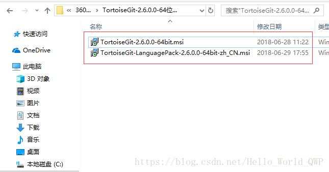
安装TortoiseGit
安装TortoiseGit客户端之前，需要先安装Git服务端 《 Windows下本地git服务器端安装图文教程 》
1、双击安装程序，进入到TortoiseGit安装界面，如下图：
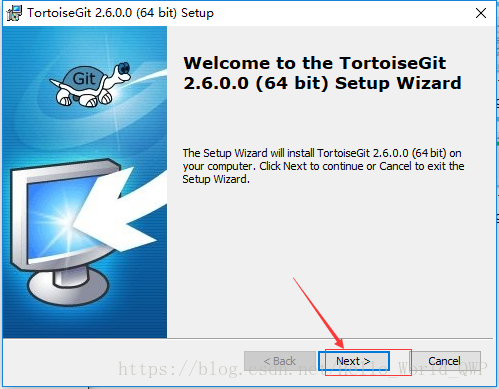
2、当前安装的TortoiseGit版本信息简介，Next 即可，如下图：
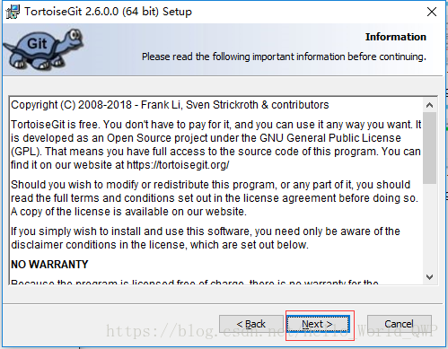
3、选择TortoiseGit客户端，这儿默认即可，如下图：
4、选择需要安装的TortoiseGit组件，可以选择修改TortoiseGit的安装路径即可，如下图：
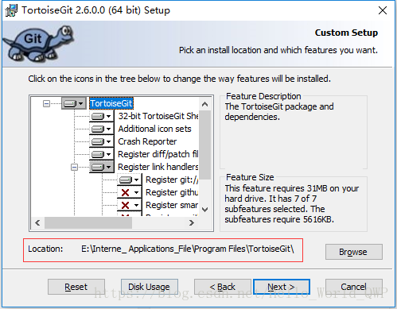
5、选择完毕后，点击 “ Install ” 即可，如下图：
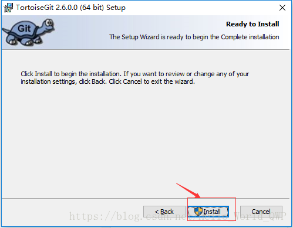
6、开始TortoiseGit的安装，如下图：
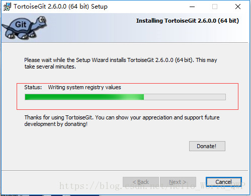
7、注意：这儿安装完成后，如果需要安装汉化版，这儿就不用进入向导了，直接关闭即可，如下图：
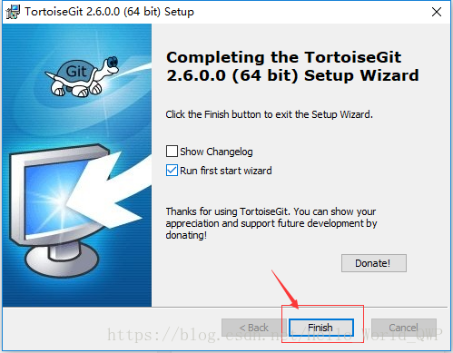
8、安装TortoiseGit汉化包，在下载的文件中，直接双击TortoiseGit汉化包安装即可。
9、进入TortoiseGit配置界面
桌面（任意文件夹）右键 -> TortoiseGit -> Settings ，如下图：
10、汉化TortoiseGit
这儿是需要选择语言即可，Git.exe Path会自动找到本地已经安装完成的Git，如下图：
11、创建（Create）版本库
使用TortoiseGit在本地初始化一个空的Git仓库，在本地仓库目标目录，右键 -> Git Create repository here ，然后直接OK到底，此时，该文件夹中会出现一个 “ .git ” 的文件，说明当前目录被成功的创建问本地版仓库了，如下图：
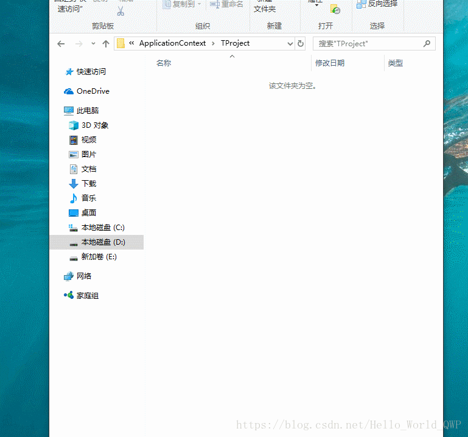
12、提交(commit)代码
12.1 创建一个.Java文件夹，内容自定义，如下图：
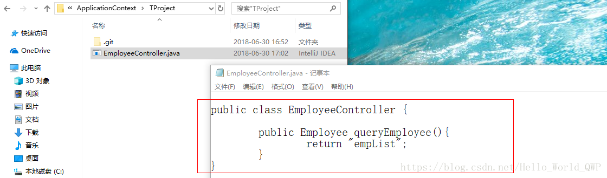
12.2 在空白处，右键 -> Commit->"master" ，然后填入版本message，勾选需要提交的文件，然后点击OK。这时会弹出一个提升窗口点击close即可，如下图：
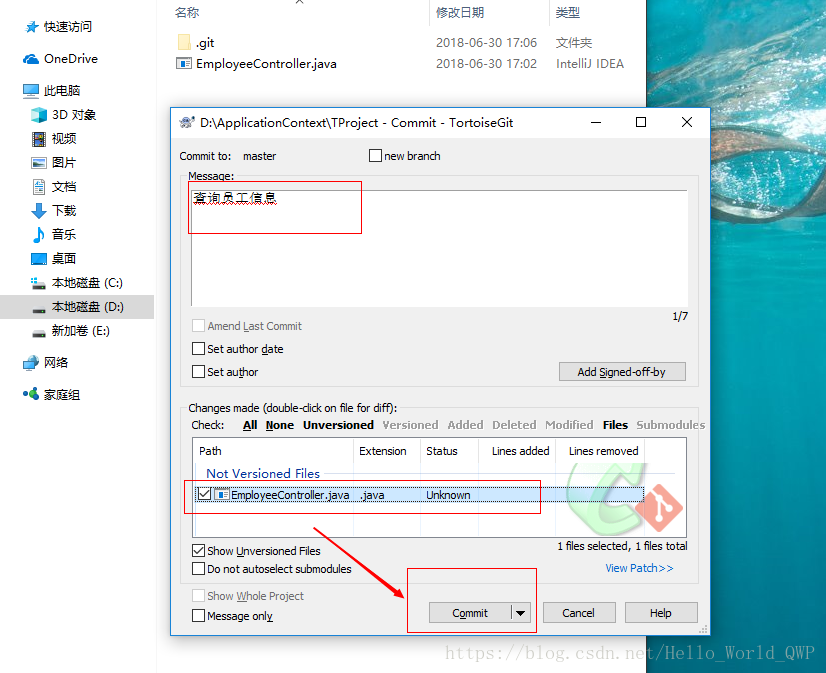
12.3 将项目成功的提交到了本地的Master，如下图：
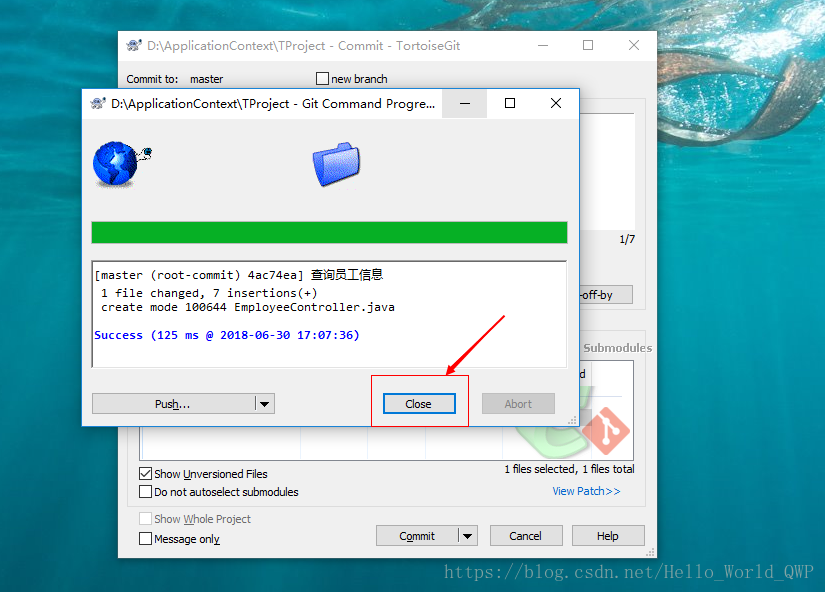
12、3 在类中新增一个修改的方法，如下图：
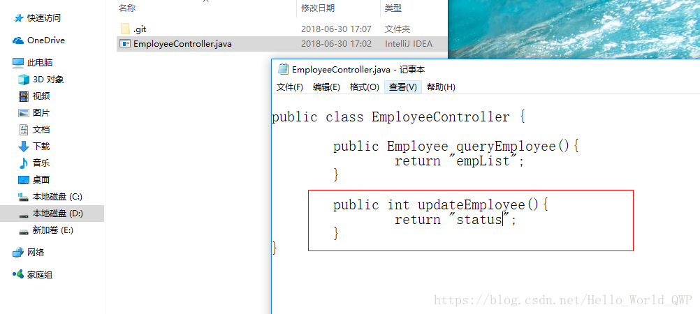
12、4 再次提交当前代码，然后右键 -> TortoiseGit -> Show log ，出现代码的版本信息（新增和修改清晰明了），如下图：
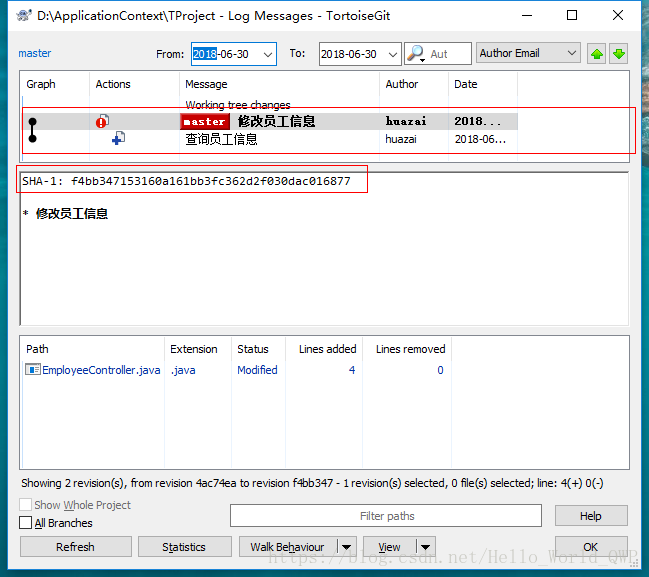
13、推送(push)代码
13、1 这儿使用github为例，先在github上创建一个仓库 《 如何在 GitHub 上创建代码仓库 》
13、2 将本地git仓库中的代码，push到远程github上，右键 -> tortoiseGit -> push -> Manage ，如下图：
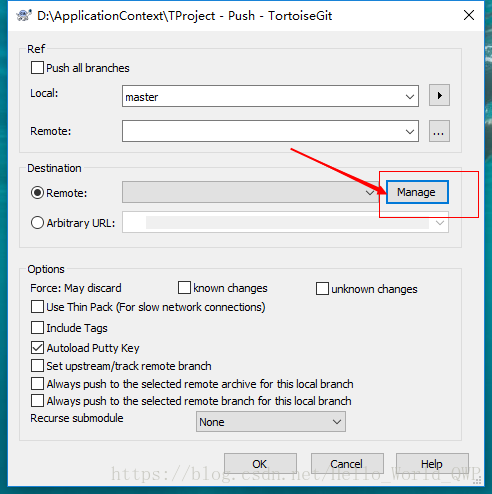
13.3 填写远程仓库的 URL -> 确定 -> OK ，在提交的过程中填入用户名和密码即可，如下图：
13、4 输入远程仓库的登录名和登录密码，点击 “ Login ” ，如果不登录名和密码无误，则提交成功，如下图：
13、5 到远程仓库查看是否提交成功，如果远程仓库的内容和本地仓库内容一致，则说明Push成功了，如下图：
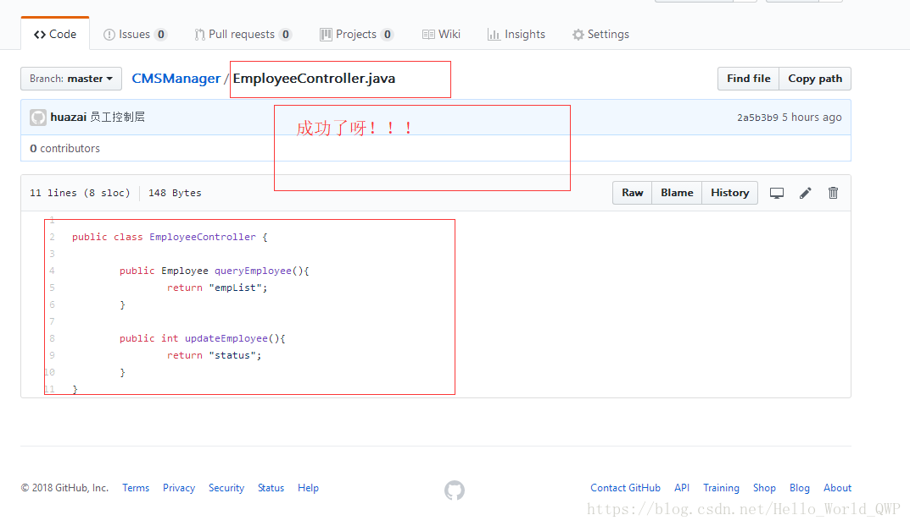
14、从GitHub上Pull一个项目，在这儿提供一个日志框架log4j的源码地址作为测试用，
git://git.apache.org/log4j.git
14.1、 在本地新建一个空的文件夹，用于存放远程Clone下来的项目，如下图：
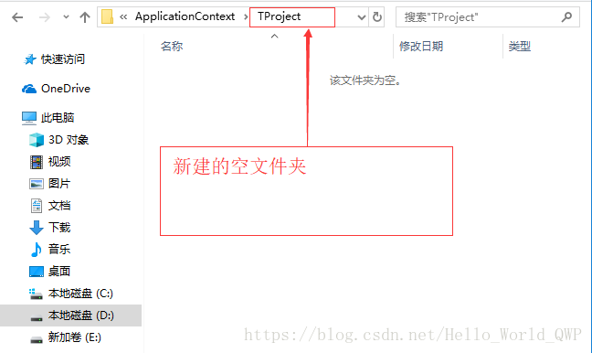
14.2、 右键 -> Git Clone ，如下图：
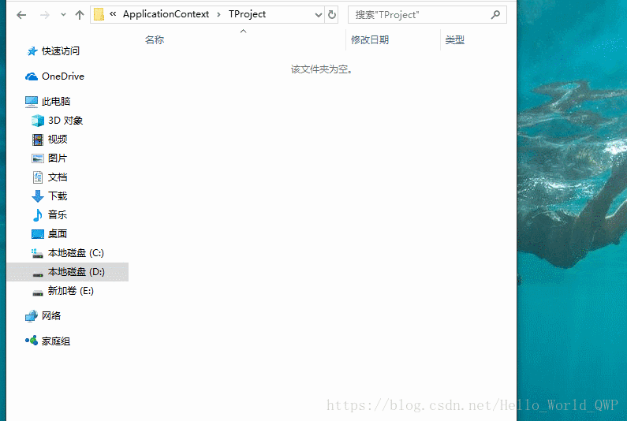
14.3、 Clone 成功后会获得项目的目录结构，如下图：
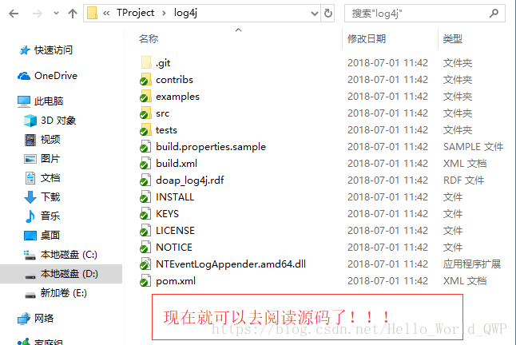
15、 Push/Pull时可能遇到的问题
15.1、 Push 时异常，如下图：
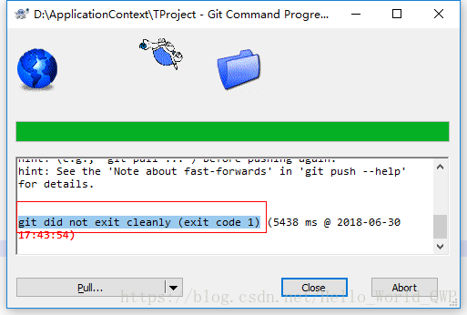
解決辦法：《 git did not exit cleanly (exit code 1) 》
15.2、 Pull 時異常，如下圖：
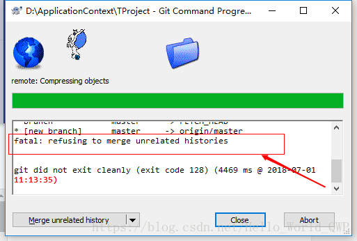
解決辦法： 《 git did not exit cleanly (exit code 128) 》
16、關於分支的操作內容較多，所以提取到了下一篇博文，避免視覺疲勞《 分支的新增、合併、刪除 》
好了，關於Windows下TortoiseGit客戶端安裝詳細教程就寫到這兒了，如果還有什麼疑問或遇到什麼問題歡迎掃碼提問，也可以給我留言哦，我會一一詳細的解答的。
歇後語：“ 共同學習，共同進步”，也希望大家多多關注CSND的IT社區。


 107
107


嗯嗯，客气客气，感谢支持呀！